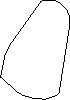
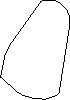
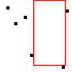
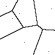

Geometry
Last modified: May 17, 2022
Contents
convex_hull_as_image
Image [OneBit] convex_hull_as_image (bool filled = False)
| Operates on: | Image [OneBit] |
|---|---|
| Returns: | Image [OneBit] |
| Category: | Geometry |
| Defined in: | geometry.py |
| Author: | Christoph Dalitz |
Returns an image containing the polygon of the convex hull calculated by convex_hull_as_points.
Example 1: convex_hull_as_image()
 

convex_hull_as_points
[object] convex_hull_as_points ()
| Operates on: | Image [OneBit] |
|---|---|
| Returns: | [object] |
| Category: | Geometry |
| Defined in: | geometry.py |
| Author: | Christoph Dalitz |
Returns the vertex points of the convex hull of all black pixels in the given image.
Actually not all black pixels are required for computing the convex hull, but only the left and right contour pixels of the image. This follows from the fact that, when a point is invisible both from the left and the right, it lies on the connection axis between two visible points and thus cannot be a vertex point of the convex hull.
convex_hull_from_points
[object] convex_hull_from_points ([object points])
| Returns: | [object] |
|---|---|
| Category: | Geometry |
| Defined in: | geometry.py |
| Author: | Christian Brandt, Christoph Dalitz, and David Kolanus |
Returns the polygon vertices of the convex hull of the given list of points.
The function uses Graham's scan algorithm as described e.g. in Cormen et al.: Introduction to Algorithms. 2nd ed., MIT Press, p. 949, 2001
delaunay_from_points
object delaunay_from_points ([object points], IntVector labels)
| Returns: | object |
|---|---|
| Category: | Geometry |
| Defined in: | geometry.py |
| Author: | Oliver Christen (based on code by Olivier Devillers) |
Computes the Delaunay triangulation directly from a list of points and point labels. The result is a list which contains tuples of adjacent labels, where in each tuple the smaller label is given first.
The arguments points and labels specify the points and nonnegative labels, such that labels[i] is the label of points[i]. Note that the labels need not necessarily all be different, which can be useful for the computation of a neighborship graph from a set of connected components.
The computation of the Delaunay triangulation is based on the Delaunay tree which is a randomized geometric data structure. It is described in O. Devillers, S. Meiser, M. Teillaud: Fully dynamic Delaunay triangulation in logarithmic expected time per operation. Computational Geometry: Theory and Applications 2, pp. 55-80, 1992.
This can be useful for building a neighborhood graph as shown in the following example:
from gamera import graph
from gamera.plugins.geometry import delaunay_from_points
points = [(10,10),(20,30),(32,22),(85,14),(40,70),(80,85)]
labels = range(len(points))
neighbors = delaunay_from_points(points, labels)
g = graph.Graph(graph.UNDIRECTED)
for pair in neighbors:
g.add_edge(pair[0], pair[1])
hough_lines
object hough_lines ([object points], float theta_min, float theta_step, float theta_max, float rho_min, float rho_step, float rho_max, int n_lines, float threshold)
| Returns: | object |
|---|---|
| Category: | Geometry |
| Defined in: | geometry.py |
| Author: | Manuel Jeltsch and Christoph Dalitz |
Finds lines in a point set with the Hough transform. Lines are represented by the Hessian normal form, i.e. by the two parameters theta and rho, where rho is the distance of the line to the origin, and theta is the angle of normal; a horizontal line therefore has theta = 90 degrees.
The found lines are returned as a list of tuples [(votes, theta, rho),...], where votes is the number of points from the point set belonging to this line. The lines are sorted by votes in descending order. Which and how many lines are returned is controlled with threshold and n_lines. The angles theta are given in degrees.
Arguments:
- points:
- The points from the point cloud.
- theta_min, theta_step, theta_max
- Theta-quantization of the Hough space, i.e. the range of angles to be tested. Angles are spezified in degrees.
- rho_min, rho_step, rho_max
- Rho-quantization of the Hough space, i.e. the range of origin-distances to be tested.
- n_lines
- The number of highest votes lines that are returned. When set to zero, all found lines are returned.
- threshold
- Only lines with more votes (points) than threshold are returned.
labeled_region_neighbors
object labeled_region_neighbors (bool eight_connectivity = True)
| Operates on: | Image [OneBit] |
|---|---|
| Returns: | object |
| Category: | Geometry |
| Defined in: | geometry.py |
| Author: | Christoph Dalitz |
For an image containing labeled regions, a list of all label pairs belonging to touching regions is returned. When eight_connectivity is True (default), 8-connectivity is used for neighborship, otherwise 4-connectivity is used.
This can be useful for building a Delaunay graph from a Voronoi tesselation as in the following example:
#
# build Delaunay graph of neighboring (i.e. adjacent) Cc's
#
# create map label->Cc for faster lookup later
ccs = image.cc_analysis()
label_to_cc = {}
for c in ccs:
label_to_cc[c.label] = c
# compute area Voronoi tesselation and neighborship list
voronoi = image.voronoi_from_labeled_image()
labelpairs = voronoi.labeled_region_neighbors()
# build map of all neighbors for each label for fast lookup
neighbors = {}
for label in label_to_cc.keys():
neighbors[label] = []
for n in labelpairs:
neighbors[n[0]].append(n[1])
neighbors[n[1]].append(n[0])
# now, all neighbors to a given cc can be looked up with
neighbors_of_cc = [label_to_cc[label] for label in neighbors[cc.label]]
max_empty_rect
Rect max_empty_rect ()
| Operates on: | Image [OneBit] |
|---|---|
| Returns: | Rect |
| Category: | Geometry |
| Defined in: | geometry.py |
| Author: | Daveed Vandevoorde and Christoph Dalitz |
Returns the maximum area empty rect that fits into the image without containing any of the black image pixels. This problem is in the literature generally known as the Largest Empty Rectangle Problem.
When the image does not contain a white pixel at all, an exception of type RuntimeError is thrown. The coordinates of the returned rectangle are relative to the upper left corner of the image.
Reference: D. Vandevoorde: "The Maximal Rectangle Problem." Dr. Dobb's, April 1998.
Example 1: max_empty_rect

voronoi_from_labeled_image
Image [OneBit|GreyScale] voronoi_from_labeled_image ()
| Operates on: | Image [OneBit|GreyScale] |
|---|---|
| Returns: | Image [OneBit|GreyScale] |
| Category: | Geometry |
| Defined in: | geometry.py |
| Author: | Christoph Dalitz, based on code by Ullrich Köthe |
Computes the area Voronoi tesselation from an image containing labeled Cc's. In the returned onebit image, every pixel is labeled with the label value of the closest Cc in the input image.
To prepare the input image, you can use cc_analysis. When the Cc's only consist of single points, the area Voronoi tesselation is identical to the ordinary Voronoi tesselation.
The implementation applies a watershed algorithm to the distance transform of the input image, a method known as seeded region growing (U. Köthe: Primary Image Segmentation. Proceedings 17th DAGM-Symposium, pp. 554-561, Springer, 1995).
The example shown below is the image voronoi_cells as created with the following code:
# create an area Voronoi tesselation and
# mark the cells and their edges in color
ccs = image.cc_analysis() # labels the image
voronoi = image.voronoi_from_labeled_image()
voronoi_cells = voronoi.color_ccs()
voronoi_cells.highlight(image, RGBPixel(0,0,0))
voronoi_edges = voronoi.labeled_region_edges()
voronoi_cells.highlight(voronoi_edges, RGBPixel(255,255,255))
Example 1: voronoi_from_labeled_image

voronoi_from_points
voronoi_from_points ([object points], IntVector labels)
| Operates on: | Image [OneBit|GreyScale] |
|---|---|
| Category: | Geometry |
| Defined in: | geometry.py |
| Author: | Christoph Dalitz |
Computes the Voronoi tesselation from a list of points and point labels. The result is directly written to the input image. Each white pixel is labeled with the label value of the closest point. Non white pixel in the input image are not overwritten.
The arguments points and labels specify the points and labels, such that labels[i] is the label of points[i]. Note that the labels need not necessarily all be different, which can be useful as an approximation of an area Voronoi tesselation.
The algorithm is very simple: it stores the points in a kd-tree and then looks up the closest point for each image pixel. This has a runtime of O(N log(n)), where N is the number of image pixels and n is the number of points. For not too many points, this should be faster than the morphological region growing approach of voronoi_from_labeled_image.
The example shown below is the image voronoi_edges as created with the following code:
# create a Voronoi tesselation and mark
# the cell edges in a second image
points = [(10,10),(20,30),(32,22),(85,14),(40,70),(80,85)]
voronoi = Image((0,0),(90,90))
voronoi.voronoi_from_points(points,[i+2 for i in range(len(points))])
voronoi_edges = voronoi.labeled_region_edges()
for p in points:
voronoi_edges.set(p,1)
Example 1: voronoi_from_points
